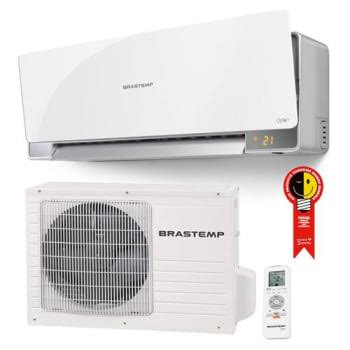

Ar Condicionado Inverter 12000 BTUs Hinsense Eco Plus AS-12TW2RLRCK00E - 220V É a escolha ideal para quem busca conforto térmico com eficiência e economia no dia a dia. Equipado com a tecnologia inverter, o equipamento mantém a temperatura estável, reduz picos de consumo de energia e proporciona funcionamento mais silencioso, tornando o ambiente mais agradável para descanso, trabalho ou lazer. Sua capacidade de 12000 BTUs é indicada para espaços compactos, garantindo climatização rápida e equilibrada. Desenvolvido com serpentina de cobre, o aparelho oferece maior durabilidade e melhor troca térmica, contribuindo para um desempenho consistente ao longo do tempo. O sistema de super resfriamento acelera a redução da temperatura nos dias mais quentes, enquanto o gás refrigerante R32 reforça o compromisso com eficiência energética e menor impacto ambiental. Outro diferencial importante é a garantia de 10 anos para o compressor, trazendo mais segurança e tranquilidade ao consumidor. O recurso I Feel Sinta o conforto na medida certa eleva a experiência de uso, pois o ar-condicionado detecta a posição do controle remoto e ajusta automaticamente a temperatura, garantindo conforto exatamente onde você está. Esse ajuste inteligente proporciona sensação térmica personalizada, evitando desperdícios e assegurando bem-estar contínuo. Com design moderno e tecnologia avançada, este modelo Hisense Eco Plus se destaca como uma solução eficiente e confortável para climatizar seu ambiente.